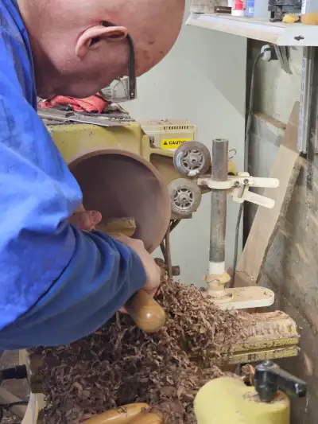

About Turning Alaska
Turning Alaska, owned by Steve Thomas, is a Ketchikan-based studio that specializes in woodturning and creating unique, handcrafted items. From beautifully crafted wooden bowls to exquisite jewelry made from mammoth tusk and tooth, each piece reflects the natural beauty and heritage of Alaska. Steve’s work is featured in local shops, cherished by collectors, and inspired by the rich landscapes and materials of the region.
Our Craft
At Turning Alaska, we pride ourselves on combining expert craftsmanship with Alaska's unique resources. Whether it's turning a block of local wood into a stunning bowl or transforming ancient materials into one-of-a-kind jewelry, every creation is a tribute to the natural beauty of our surroundings.
Steve Thomas

With over 30 years experience with woodworking including turning bowls, crafting jewlery, and creating furniture, Steve Thomas has learned from some of the most talented individuals around- as well as having learnt plenty from his own experience.
Steve grew up and attended university in Idaho, where he met his wife Jolene. After graduating, he got a job teaching woodworking at the Payette High School. In 2009, Steve and Jolene decided to move their family of six to Ketchikan, Alaska, where they fell in love with the community decided to stay. While in Ketchikan they opened up their home to children in need, resulting in the eventual adoption of their two youngest children.
In 2016 Steve was injured in an accident involving a lathe that nearly killed him. Despite the years it took to recover from his injury his love for woodworking and his family never diminished. Having been forced into an early retirement, he now has more time than ever to spend with his family and honing his craft.